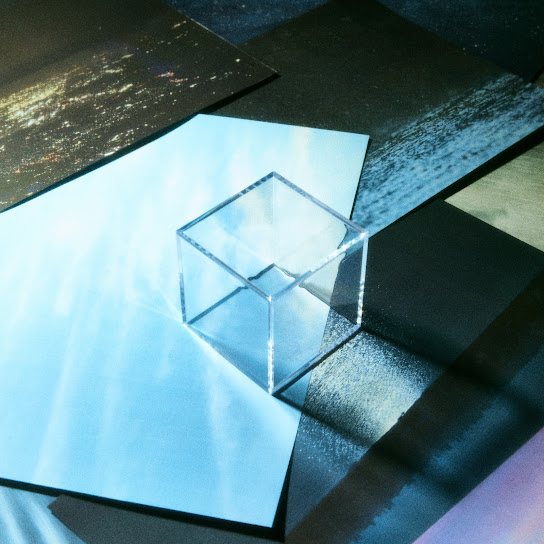

ATARAYO - また夏を追う
마타 나츠노 오우
(다시 여름을 쫓다)

2nd - 季億の箱
키오쿠노 하코
(추억 상자)
梅雨明けの空滲む街
츠유아케노 소라 니지무 마치
(장마가 갠 하늘, 스며드는 거리)
窓から透ける街灯は
마도카라 스케루 가이토-와
(창문 너머로 비치는 가로등은)
まるで月明かりのように
마루데 츠키아카리노 요-니
(마치 달빛처럼)
僕らを照らす
보쿠라오 테라스
(우리들을 비춰)
欠けた夜空に散らかった
카케타 요조라니 치라캇타
(이지러진 밤하늘에 흩어진)
喧騒に紛れる星はまるで
켄소-니 마기레루 호시와 마루데
(소란 속에 뒤섞인 별은 마치)
僕らのようさ
보쿠라노 요-사
(우리들 같아)
自分を隠してる
지분오 카쿠시테루
(자신을 숨기고 있어)
泣くのはもうやめにするんだ
나쿠노와 모- 야메니 스룬다
(우는 건 이제 그만둘 거야)
ここからは一人歩くんだ
코코카라와 히토리 아루쿤다
(여기부터는 혼자 걸을 거야)
君以外の誰かをまた愛せるように
키미 이가이노 다레카오 마타 아이세루 요-니
(너 말고 다른 누군가를 다시 사랑할 수 있도록)
ほらずっと
호라 즛토
(봐 계속)
僕らはきっとどこかでいつも
보쿠라와 킷토 도코카데 이츠모
(우리들은 분명 어딘가에서 언제나)
何かを間違えていたんだね
나니카오 마치가에테 이탄다네
(뭔가를 잘못하고 있었던 거야)
それでも変われない君を取り残して
소레데모 카와레나이 키미오 토리노코시테
(그래도 변하지 못하는 너를 남겨두고)
いつしか僕だけ変わっていたんだ
이츠시카 보쿠다케 카왓테 이탄다
(어느새 나만이 변해 있었어)
ほら気づけばもう
호라 키즈케바 모-
(봐 정신 차려 보니 이젠)
また夏を追う
마타 나츠오 오우
(또다시 여름을 쫓아)
いえない傷が増えていく
이에나이 키즈가 후에테 이쿠
(말할 수 없는 상처가 늘어가)
取り繕うだけの僕らの日々は
토리츠쿠로우 다케노 보쿠라노 히비와
(꾸며낼 뿐인 우리들의 나날은)
あまりに脆く崩れていった
아마리니 모로쿠 쿠즈레테 잇타
(너무나도 허무하게 무너져 갔어)
「変わったね」と君は言うけど
「카왓타네」토 키미와 유-케도
("변했네"라고 너는 말하지만)
変わらなければもっと早く
카와라나케레바 못토 하야쿠
(변하지 않았다면 더 빨리)
終わっていた
오왓테 이타
(끝났을 거야)
それさえ知らないんだろ
소레사에 시라나인다로
(그것조차 모르겠지)
泣くのはもうやめにするんだ
나쿠노와 모- 야메니 스룬다
(우는 건 이제 그만둘 거야)
泣かない君が泣いたから
나카나이 키미가 나이타카라
(울지 않던 네가 울었으니까)
これじゃまるで僕の方が悪者みたいだ
코레쟈 마루데 보쿠노 호-가 와루모노 미타이다
(이래서는 마치 내가 악당 같잖아)
でもきっと
데모 킷토
(하지만 분명)
君から見た僕はずっと
키미카라 미타 보쿠와 즛토
(네가 본 나는 계속)
遠くを歩いていたんだね
토-쿠오 아루이테 이탄다네
(먼 곳을 걷고 있었던 거야)
だからもう変われない君を取り残して
다카라 모- 카와레나이 키미오 토리노코시테
(그래서 더는 변하지 못하는 너를 남겨두고)
いつしか僕だけ変わっていたんだ
이츠시카 보쿠다케 카왓테 이탄다
(어느새 나만이 변해 있었어)
ほら気づけばもう
호라 키즈케바 모-
(봐 정신 차려 보니 이젠)
また夏を追う
마타 나츠오 오우
(또다시 여름을 쫓아)
未練も後悔も
미렌모 코-카이모
(미련도 후회도)
全部捨ててしまえたらいっそ
젠부 스테테 시마에타라 잇소
(전부 버릴 수 있다면 차라리)
楽になれるだろうに
라쿠니 나레루 다로-니
(편해질 수 있을 텐데)
出来やしないんだ
데키야 시나인다
(할 수 없어)
街中に溢れてる
마치쥬-니 아후레테루
(온 거리에 넘쳐나는)
君の影を見る度
키미노 카게오 미루 타비
(너의 그림자를 볼 때마다)
また泣いてしまうんだ
마타 나이테 시마운다
(또 울어버려)
泣くのはもうやめにするんだ
나쿠노와 모- 야메니 스룬다
(우는 건 이제 그만둘 거야)
ここからは一人歩くんだ
코코카라와 히토리 아루쿤다
(여기부터는 혼자 걸을 거야)
君以外の誰かをまた愛せるように
키미 이가이노 다레카오 마타 아이세루 요-니
(너 말고 다른 누군가를 다시 사랑할 수 있도록)